Самый простой способ контроля за торговой точкой – получение отчетов на электронную почту. GBS.Market позволяет настроить отправку отчетов по расписанию или определенной сумме продаж.
Полезные материалы
Внешний вид отчетов
На электронную почту отправляются отчеты в виде письма, в котором указана основная информация о продажах за текущий день. Письмо выглядит так
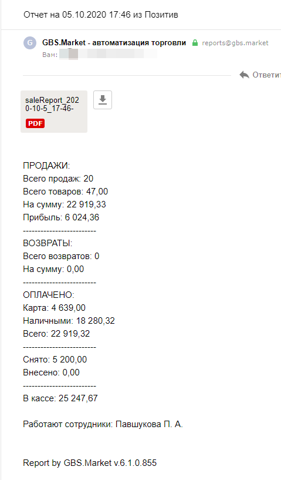Во вложении прикреплен файл в формате PDF со списком проданных товаров
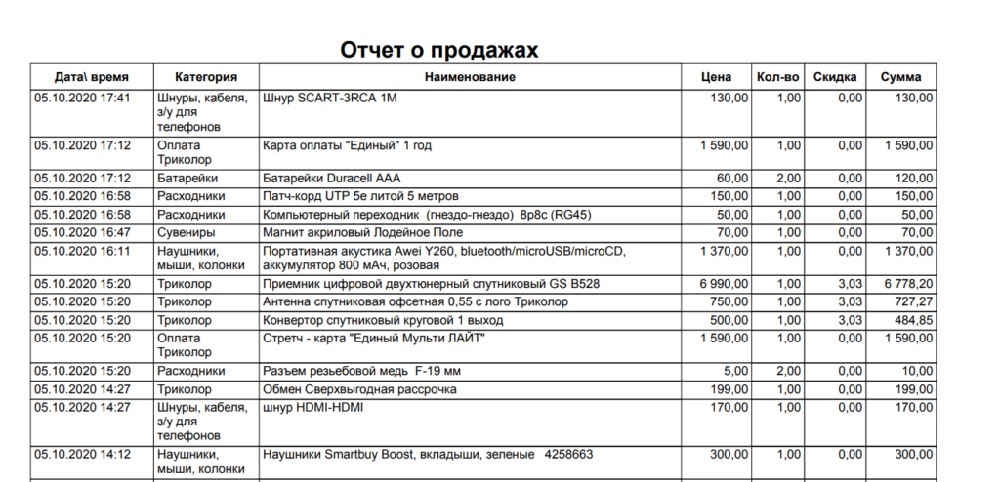Полезно
Файл формируется по шаблону. Шаблон можно настроить в т.ч. таким образом, чтобы количество для каждого товара суммировалось. Это может быть полезно, если отчет отправляется в конце рабочего дня.
Внимание
Обратите внимание, что отчет формируется с учетом опции "Время начала смены", доступной в настройках программы.
Настройки
Откройте настройки программы: Файл – Настройки
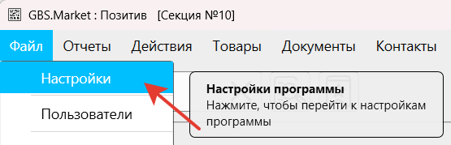Перейдите на "Удаленный контроль", вкладку "Отчеты на E-mail" и включите опцию "Отправлять отчеты на E-mail"
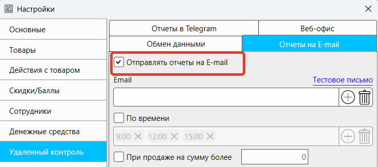Адреса электронной почты
Добавление адресов
Для отправки отчетов на E-mail можно использовать один или несколько адресов электронной почты. Нажмите кнопку (+), чтобы указать адрес для получения отчетов
Введите адрес и нажмите ОК.

Добавьте еще адреса, если это необходимо. В итоге список адресов будет выглядеть так:
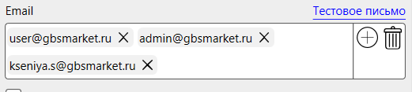Удаление адресов
При необходимости можно удалить адреса из списка.
Можно удалить один адрес, нажав на крестик рядом с ним:
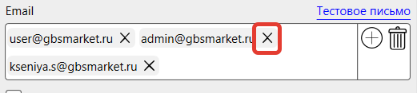Нажав на кнопку с корзиной можно удалить все адреса из списка
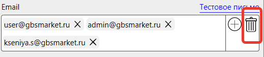Отправка тестового письма
Для проверки корректного указания электронной почты можно воспользоваться функцией отправки тестового письма. Нажмите на "тестовое письмо" над списком адресов.
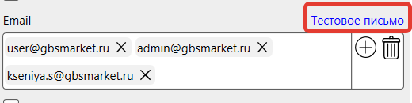Программа отправит тестовые письма на все указанные адреса и сообщит о результатах.
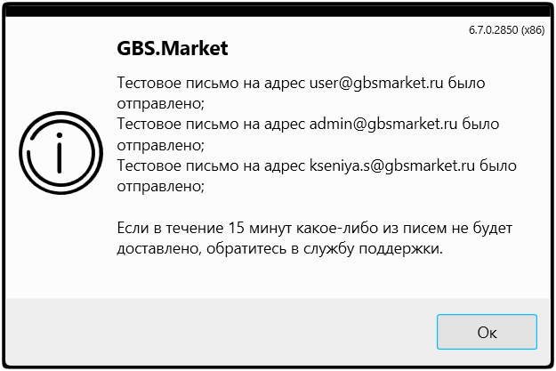Если адреса указаны корректно, то в течение 5-10 минут на каждый из ящиков будет доставлено письмо об успешной отправке
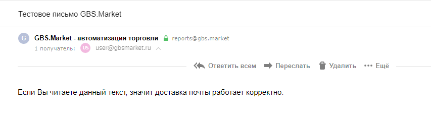Важно
Если программа сообщила об ошибке отправки письма или в течение 15 минут письмо не было доставлено, обратитесь в службу поддержки.
Убедитесь, что письмо не попало в СПАМ!
Расписание доставки отчетов
Для доставки отчетов по расписанию включите опцию "По времени".
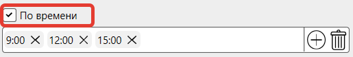Добавление времени
Для добавления времени, в которое будет отправляться отчет, нажмите кнопку ( + )
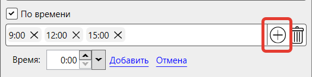Затем укажите время отправки и нажмите "Добавить"
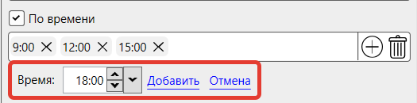Указанное время будет добавлено в список
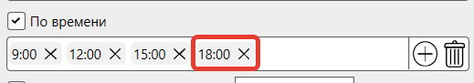Удаление времени
При необходимости можно удалить указанные промежутки времени.
Нажмите на крестик рядом с временем, чтобы удалить его из списка
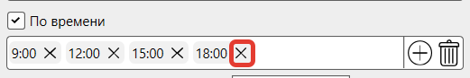Или нажмите на кнопку с корзинкой, чтобы удалить все введенные значения
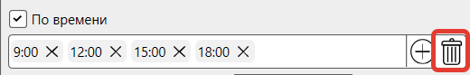Отчет по сумме продаж
Можно настроить отправку отчетов при продаже на сумму больше определенного значения, как независимо от расписания, так и одновременно с ним.
Например, вы хотите знать, когда происходят продажи на сумму более 10 тысяч рублей.
Для того чтобы получать отчеты в таких случаях, включите опцию "При продаже на сумму более" и укажите сумму продажи.
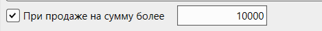Если оставить значение равное нулю, то отчет будет отправляться при каждой продаже.
Отчет при закрытии программы
При необходимости получения отчета по завершении работы программы, например, при закрытии торговой точки, вы можете активировать соответствующую опцию.
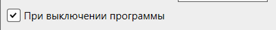Если эта опция будет включена, то программа перед завершением работы отправит отчет о продажах за текущий день.
Отчет при закрытии смены
Включите эту опцию, чтобы отчеты на E-mail отправлялись, когда на подключенной кассе выполняется закрытие смены (снятие Z-отчета).
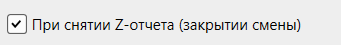Очистка очереди отчетов
Если в программе накопилось много неотправленных отчетов, например, не было доступа к интернету, можно очистить очередь отчетов, нажав соответствующую кнопку.
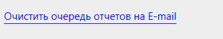Важно
- Для отправки отчетов (и тестовых писем в т.ч.) компьютер с программой должен быть подключён к интернету.
- Важно понимать, что отчеты могут быть отправлены только при запущенной программе. Если программа будет закрыта в период времени, который указан в расписании, то отчет не будет отправлен.
- В указанные в расписании промежутки происходит формирование отчета. Т.е. сам отчет может быть отправлен с задержкой, которая обычно составляет не более 5 минут.
- Если отчет не удалось отправить, он будет поставлен в очередь для отправки. Например, если не было доступа к интернету, то программа попытается отправить отчет тогда, когда появится интернет.
- Отчеты отправляются с адреса reports@gbsmarket.ru Добавьте в "белый список" данный адрес, чтобы избежать попадания писем в СПАМ.